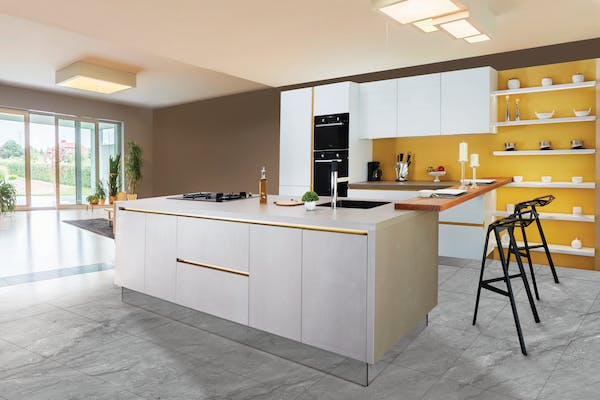

גל מטבחים - עיצוב, תכנון
וביצוע מטבחים איכותיים
גל מטבחים מקדימים את השינויים
המודרניים והעיצובים
העתידיים על מנת לייצר בעבורכם מטבח מושלם ויוקרתי
באיכות הגבוהה ביותר,
בו תוכלו – לבשל בהנאה, לארח ולהתפנק מנוחות, איכות ויוקרה.
חברתנו נוסדה בשנת 1992 ומתמחה בתכנון,
ייצור והתקנה של מטבחי יוקרה בהתאמה
אישית ומדויקת לצורכי הלקוח.
אנו מקפידים על מתן ייעוץ אישי, ליווי מקצועי
ותכנון קפדני של מטבח חלומותיכם – גל מטבחים מכניסים טעם לחיים.
תיכנון
טכנולוגיות חדישות וייצור מתקדם
– אנו מייצרים מטבחים
העומדים בקריטריונים הגבוהים
ביותר של איכות ועמידות בשילוב
טכנולוגיות חדישות
ומתקדמות למטבח.
לקוחותינו נהנים ממטבחי
יוקרה מעוצבים
בהם מותקן מותג הפרזול המתקדם
והחדשני בעולם מבית ”בלום“
וממגוון עצום של
אפשרויות ייצור מתקדמות בשילובים
ייחודיים של סוגי
חומרים חדישים ויוקרתיים –
אנו מקפידים על
קדמה, חדשנות ויוקרה בעבורכם.
עיצוב
העיצובים שלנו – אפשרויות העיצוב
העומדות בפני לקוחות גל מטבחים הן
המובילות והעכשוויות בתחום
העיצוב בארץ
ובעולם. עיצוב מטבחים
בכל הסגנונות ובשילובים
ייחודיים ויוקרתיים, החל מעיצובים
קלאסיים בקווים נקיים
ושמירה מוחלטת על מראה
יוקרתי וכלה בעיצובי
פרובנס של מטבחים כפריים
ומגוון עצום של אפשרויות
עיצוב העומדות בפניכם.צוות המעצבים
והאדריכלים שלנו
יהפכו את חלומותיכם למציאות!
הגשמה
מהאח הגדול
לפרויקטים יוקרתיים ועד
ללקוח הפרטי – לקוחות
גל מטבחים בהם נמנים: מעצבים,
אדריכלים,
קבלנים מובילים,
יזמי פרויקטים יוקרתיים,
לקוחות פרטיים ומגוון עצום
של חברות בנייה מובילות –
שירות
לקוחותינו נהנים משירות מקצועי,
אישי וקשוב של
מעצבים מיומנים מהשורה
הראשונה הדואגים להפוך
את חלומם למטבח מושלם,
מעבודתם של אנשי שירות
התקנות מובחרים אשר
ידאגו להקמה
מדויקת של המטבח וכמובן
לשירות אישי וקשוב ללא פשרות.
לרשותכם חמישה
סניפים הכוללים אולמות
תצוגה בערים:
ירושלים, מודיעין,
פתח תקווה ותל אביב.
.svg)